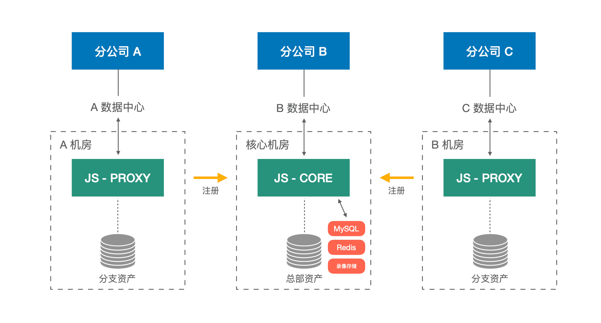
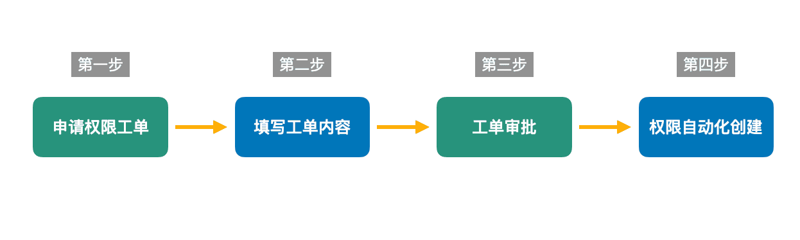
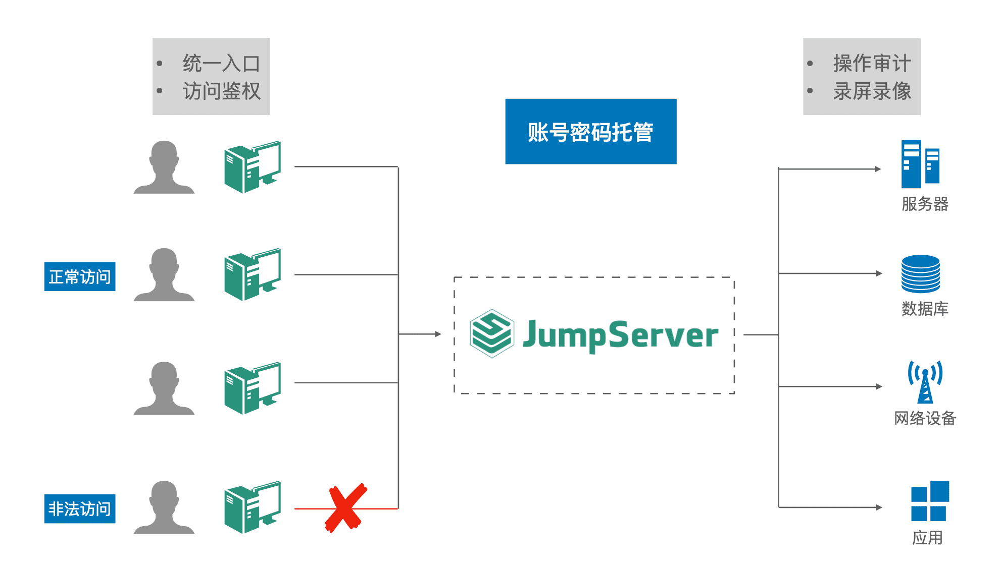
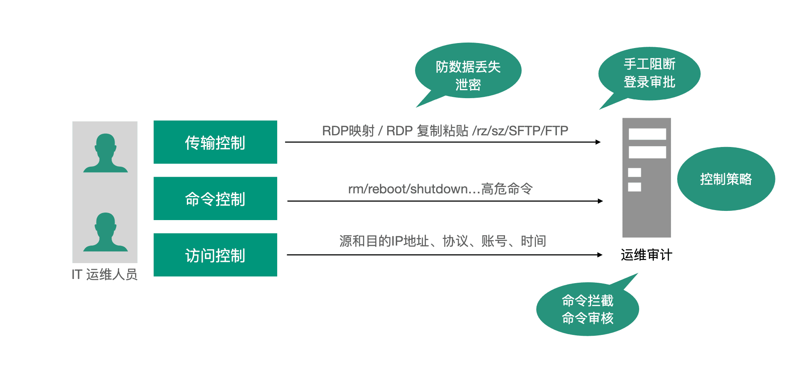
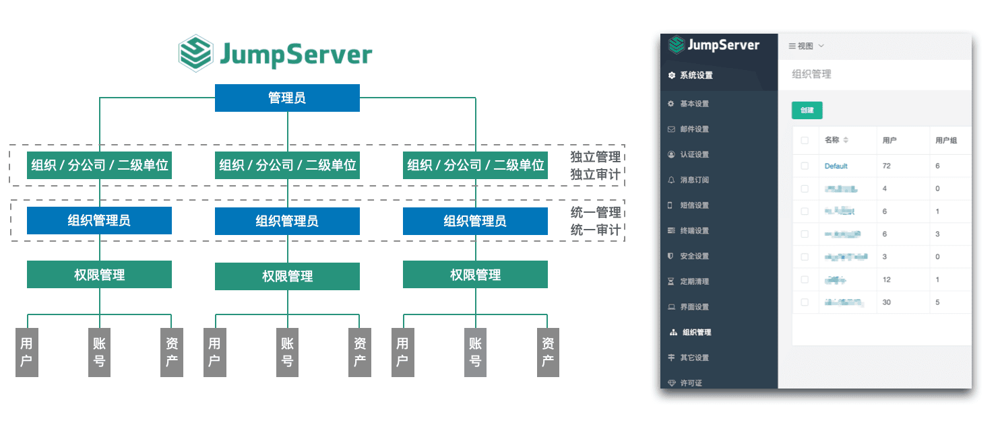

浙江天演维真网络科技股份有限公司（以下简称为“天演维真”）成立于2004年，是中国领先的乡村振兴数字化服务整体解决方案提供商。作为中国品牌农业信息化服务的先行者、中国农产品数字身份识别技术开创者，天演维真的产品已助力全国27个省、300余个县域产业振兴，赋能20000余家品牌农头企业，服务60余家认证机构，累计覆码产品超10亿。

在IT运维管理方面，天演维真的IT部门原先使用的传统运维审计平台面临着版本老旧、功能更新迭代缓慢等问题，无法满足公司现阶段的IT系统运维需求，因此需要寻找一款新的堡垒机产品。经过多方对比，天演维真的IT部门最终选择了JumpServer堡垒机。
堡垒机的选型思路
天演维真的IT部门在进行堡垒机选型时，首先考虑的就是堡垒机要能够满足企业的安全管理需求，具备强大的安全措施和对安全隐患的记录展示能力。其次，考虑到公司IT部门的规模和业务需求，选用的堡垒机设备性能需要能够承载公司快速增长的IT资产规模。同时，考虑到管理和维护的方便性，易管理和易维护也是对堡垒机产品的刚性需求。
以下就是天演维真IT部门在选择堡垒机时主要的考虑因素：
■ 安全性
农业行业对安全性的要求是非常高的，企业需要保护客户的敏感信息和数据。因此，安全性是天演维真IT部门在进行堡垒机选型时必须需要考虑的关键点；
■ 灵活性
农业行业的安全管理方式正面临着新的需求，不同的人员需要配置不同等级的权限管控，例如上传/下载权限、高风险命令的输入次数、未操作过资产用户的统计和每个用户可管理的资产等。因此，堡垒机需要具备灵活的审计能力，以满足公司多维度的安全管理需要；
■ 可扩展性
随着天演维真业务规模的扩展，堡垒机也需要具备相应的可扩展性。这样一来，堡垒机就能轻松地支持更多的用户、系统和网络设备，新的堡垒机产品需要支持高可用性和高负载均衡。
如上所述，天演维真的IT部门主要是综合安全性、功能性、易用性、灵活性和可扩展性等方面因素来选择堡垒机的。
JumpServer的部署架构
目前天演维真拥有多个分支机构，资产分布较为分散，JumpServer堡垒机所支持的分布式部署方式正好可以满足公司当前对分布式资产管理和业务使用的需求。
天演维真在公司的核心机房部署完整的JumpServer核心节点和数据库，在分支机房部署JumpServer分节点，分节点分别向核心机房的核心节点注册。
这样一来，分支机构的审计录像就会直接上传至核心机房的录像存储池中。每个分公司的用户可以通过各自的机房就近访问JumpServer入口，实现IT资产的就近访问，节省了不必要的带宽消耗。

▲ 图1 天演维真JumpServer部署架构JumpServer的使用实践
经过了一段时间的实际部署使用，天演维真的IT部门总结了一些JumpServer堡垒机的使用经验和心得，有着类似应用场景的客户可以作为参考。
1. 权限管理
JumpServer支持纳管众多类型的资产，包括各类主流资产（例如Windows、Linux、网络设备等）以及主流协议（包括SSH、RDP、VNC等）。开发人员、测试人员和第三方供应商人员对资产的访问权限与访问时间并不是一成不变的，可以随着系统、职位和组织调动等因素进行调整变化，这时候就需要申请人自行通过邮件、ITSM、OA等系统提交权限申请。
在之前使用的运维安全审计平台中，具体的权限开通需要堡垒机管理员手动开通和确认，操作起来较为繁琐。JumpServer堡垒机企业版内置了工单系统，用户只需要向管理员提交权限申请工单，通过审批后，JumpServer将会自动创建相应的权限并分发给用户。
同时，JumpServer内置的工单系统提供API接口能力，可以方便地与外部系统进行集成和调用。

▲ 图2 JumpServer权限管理流程2. 安全管理
JumpServer提供安全防护的相关功能，比如MFA多因子认证、用户登录限制、黑白名单等。管理员可以根据用户、访问主机、访问方式等内容设置细粒度的访问策略，同时支持指令黑白名单、时间黑白名单、IP黑白名单等功能，拒绝非法登录，保障系统的安全性。
同时，JumpServer通过集中统一的访问控制和细粒度的命令级授权策略，确保“权限最小化”原则，有效规避了运维操作的风险。

▲ 图3 JumpServer安全管理3. 运维审计
JumpServer支持对资产进行全面的运维审计，包括录像会话记录、在线监控、命令复核、运维审计大屏、告警等功能。针对运维过程中可能存在的潜在操作风险，JumpServer支持根据已设定的访问控制策略，自动检测日常运维过程中所发生的越权访问、违规操作等安全事件，系统能够根据安全事件的类型和等级等条件自动进行告警或阻断处理，确保系统正常运行。

▲ 图4 JumpServer运维审计4. 多租户组织管理
天演维真的堡垒机需要在多机房的场景下使用，在统一管理的前提下，JumpServer的多租户功能可以实现管理权限的下放。这样一来，各组织管理员就可以自行管理本部门的资产、用户与权限，提高了各分公司IT资产管理的自主性和灵活性。

▲ 图5 JumpServer多租户组织管理JumpServer的价值收益
目前，JumpServer已经成为天演维真在分布式IT架构下进行运维安全审计的必备组件。借助JumpServer，IT部门可以对异构IT资产进行集中管理，并构建统一的访问入口，从而有效控制IT系统的运维风险。
作为符合4A规范的运维安全审计系统，JumpServer可以为企业通过等保评估提供有力支持，并为企业带来以下收益：
■ 安全管理：借助JumpServer堡垒机的密码托管和自动改密功能，可以有效落地企业IT账号密码的管理规范，避免了因人员流动导致设备密码外泄的安全风险；
■ 审计可靠：JumpServer的审计录像功能能够完整记录运维人员的操作过程，当系统因人为操作发生故障时，可以快速定位故障原因和责任人，及时进行修复；
■ 降本增效：企业内多机房实现统一管理，无需购买多台堡垒机设备，只需一套JumpServer堡垒机即可满足分布式管理的需求，大幅降低了企业的IT建设成本。